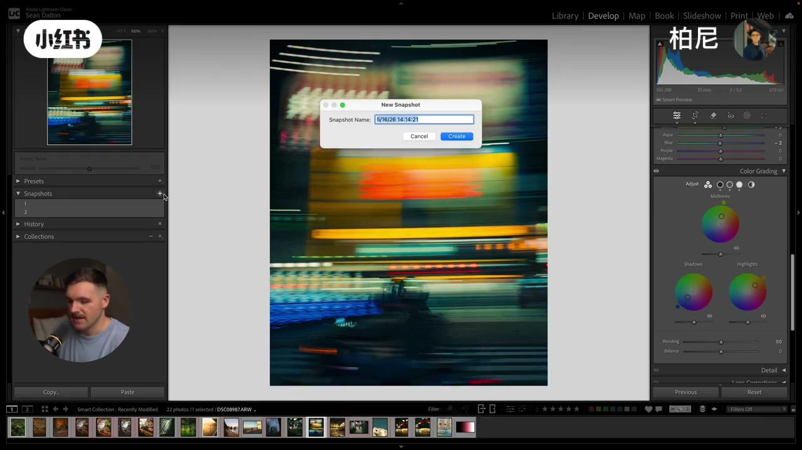
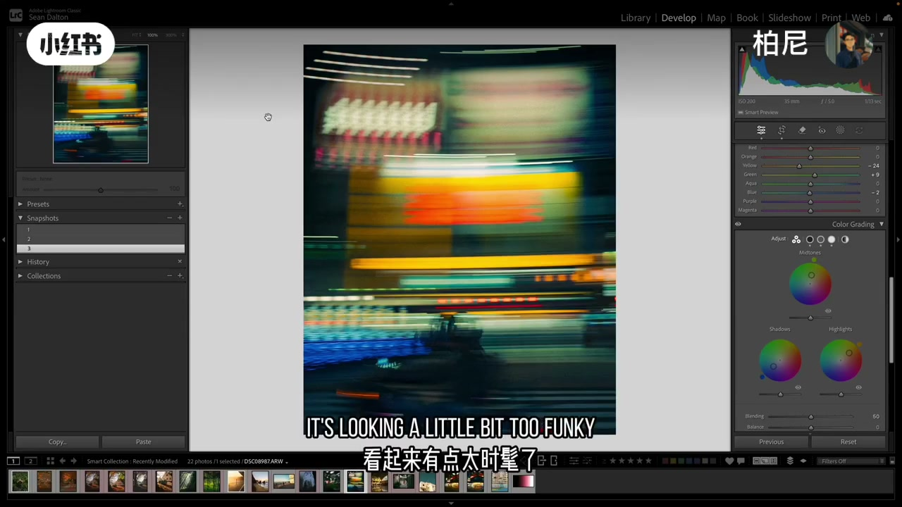
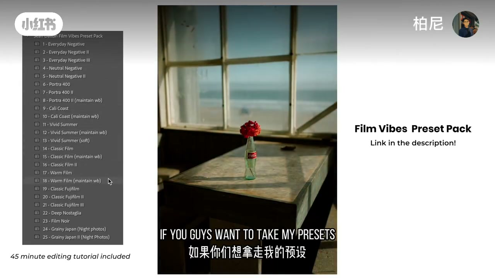

Green–red complementary: another cinematic staple.

[15:00] 类似色/单色族：靠近色轮，把一种气质推满
Analogous/mono families push one vibe by staying near on the wheel.

[16:00] 灰城加蓝中间调：很小的校色也能从「灰nonsense」变有角色
Winter gray city + blue midtones: tiny grade, big character.

[19:00] 来回打磨、保持克制；蓝橙/绿色偏好是风格，不是标准答案
Iterate gently; blue-orange/green bias is style, not law.
小结
新手抓住：分区上色 + 与 HSL 合唱 + 先试互补再试类似，夜景更大胆、日景更克制。
完整转录
英语教学口播，正文译写为简体操作说明。
Color is one of those things that can completely change the way a photo feels.
When it's done right, it can add a ton of emotion and feeling to a photo.
But when it's off, your photo can start to look a bit funky and unnatural.
So today in this video, I'm going to show you exactly how to color grade your photos using Adobe Lightroom.
I'll cover everything you need to know in order to get natural and cinematic looking colors in your photos.
And I'll even show you a secret tip that you can use to take your photos to the next level.
And by the way, all of my presets in my FilmVibes preset pack have color grades built into them.
I spent hours and hours and hours dialing in those colors.
So if you guys watch this video and you just want an easier solution, I would highly recommend checking those out.
I'll put a link down in the description.
But okay, when it comes to color grading in Lightroom, of course, we're talking about the color grading panel that you can see here.
But you should not even be touching that color grading panel until you first set a foundation of color for your image.
And you can do that by using the temperature in the tint sliders up here in the basic adjustments panel.
This is the first place I always recommend starting out when you're editing color because it allows us to establish a general mood for the photo,
which we can then build upon using the color grading tools.
And they're also incredibly easy to understand.
If I drag the temperature slider to the right, the image gets warmer.
If I drag it to the left, it gets cooler.
And for the tint slider, instead of blue and yellow or blue and orange, we have green and red.
And together, these two sliders establish the white balance of our photo.
Ideally, we want to start our edit with this being as balanced as possible.
So then we can add creative color over the top using the color grading panel.
But I also do like to use the white balance adjustments creatively as well.
There's no correct white balance that you have to choose to start your edit out.
Sometimes I lean a little bit warm or cool, depending on the overall vibe of that photo and how it looks.
But if you shot an auto white balance, your camera probably did a fantastic job of balancing that scene.
And if not, all you have to do is go up here and select auto.
And chances are it's going to select a pretty accurate white balance for your image.
But now that we have our color foundation, it's time to move on to the color grading panel.
Now the difference between the color grading panel and all the other color features in Lightroom is that the color grading panel allows us to add colors into our image instead of editing colors that are already there.
And it adds that color into different tonal ranges of our photo.Let me show you.
Now when you look at the color grading panel in its default view, you see three different circles.
And each of these circles corresponds to a different tonal range in our image.
For example, the shadows over here is going to target the shadowed areas of our image.
The highlight circle is going to target the highlights in our photo.
And the midtones is going to target the middle part of our image or the gray part of our image.
And with each of these, we can control the hue, which is the actual color itself, the saturation, which is the purity of that color, and the luminance, which is the brightness of that color.
And if I click and drag on the shadow wheel here, you'll see that I'm introducing color into the shadowed parts of our image.
If I move it further from the center, I'm going to be increasing saturation.
And when I move it around the circle, I'm going to be selecting different hues for that image.
But one thing you might have noticed is that the black section here is not being affected at all.
And that's because this is affecting the shadows.There is no light in black that can be edited.And that's why black is going to stay black.
But if we change the luminance values of those shadows, we can bring those blacks up.And you can do that with this little bar here on the bottom.
If I drag that slider to the right, I'm going to be adding gray into that black, allowing it to be affected by that shadow adjustment, because those blacks are now considered a shadow.
And it works the same way with the highlights as well.Say I want to add some pink into the highlights there.As you can see, it's not affecting the white areas.
But if I bring the luminance value down of those whites, you can see now we have some pink showing up in those brightest areas of the image.
Now I think it's also important to note that these black and white levels are also affected by other adjustments in Lightroom, not just the color grading panel.
So if I reset these here, you can see we don't have any adjustments in the black and the white sections.But if I come up to the tone curve and I drag that black point up, you can see now we have color in the black areas.
And if I drag the highlights down, you can see now we have color in the highlighted areas as well.So nothing really exists on its own in Lightroom.
And that's why I think it's important to learn how all of the tools work together.This particular video is focused on color grading.
But if you do want to learn how every slider works and how everything is tied together, I would highly recommend checking out my Lightroom Masterclass.I'll put a link down below.You guys can check that out.
But back to the color grading panel here, you'll notice that we also have two more adjustments, those being blending and balance.And if I add some color into the midtones here, let's say let's go with blue.
And then I come down here to blending and I drag that to the right.The blending adjustment is basically going to smooth out that gradients between the different colors in your photo.So if I drag it to the right, it's going to smooth it out.
But if I drag it to the left, it's going to make those changes a little bit more abrupt.And this is an adjustment that's going to be different with every single photo that you work on.
So one of the things that I like to do first is add the colors to my image and then come down and play around with blending and see how it looks.Now the other adjustment that we have here is balance.And if I drag that to the right, it's going to favor the highlighted adjustments in our image.And you can see we have a lot more pink coming into our image now.
And if I drag that to the left, you can see it's going to be focusing more on the shadowed section of the image, which at this point in time is focused on green.So we have a lot more green coming into that image.And just like blending, this is something that you're going to want to play around with because every photo is a little bit different.Sometimes it looks better to the right, sometimes it looks better to the left.You just need to experiment a little bit.Now lastly, if you look at the top of the color grading panel here, you'll see a few different circles.We have one for shadows, midtones, and highlights.And this basically just opens up a bigger panel, making it a lot easier to make finer adjustments.And that's it.
When you're working with a smaller circle, it's a little bit difficult to select the right color.But when you're working with a big circle like this, you can really find the perfect color that you want to add to your image.It also gives us sliders to work with as well.You can see we now have a hue sliders.You can select the hue here.You can select the saturation here.You can also change the luminance as well.So if you'd rather use sliders, you can easily do that by clicking on these individual channels here.And lastly, we also have a global color panel as well.And this is going to add color over your entire image.
You can see if I add blue, it's going to add blue to the entire photo here.And this is great if you really want to lean into a certain color or the temperature sliders just aren't doing it for you.The global color adjustment here can be really useful.And I'll show you a little bit more about this a little bit later on in the video.OK, but why would you want to use the color grading feature when we have a bunch of other great color editing tools available to us in Lightroom, like the HSL sliders or the point color feature?Well, like I said earlier, the color grading panel allows us to add color into specific tonal ranges of our photo, right?The highlights.
The shadows and the midtones, but the HSL sliders only allow us to edit colors that are already in our image, and we can't add color with the HSL sliders.So for example, if we go back to our example here and I scroll down to the color mixer, if I take the red saturation and bring it to the right, it's not going to do anything to the photo because there's no red in that image.We have to come down here to the color grading panel and actually add those colors in for them to show up in our image.Now you'll also notice that the HSL sliders don't affect color that we added.
We can add in with the color grading panel.So for example, if I add some red here and then I come up to the HSL sliders, if I increase the red saturation, it's not going to do anything to our photo.The color grading panel kind of sits on top of the edit and is not affected by the other color adjustments in Lightroom.And that's why a lot of photographers will tell you that you should dial in your color using the HSL sliders first before you apply the color grading feature to your image.But I personally don't think there's any strict order that you need to follow here, and I often find myself working
forth between the color grading panel and the HSL sliders to really get my color dialed in.But OK, let's see the system in action and also talk about a few specific color combinations that you can use in your photos.And the first one is to use two colors that are opposite of each other on the color wheel.Now we would also call these complementary colors.And this is where we start getting into color theory a little bit.And I'm not going to go too in-depth into this because I already made a super detailed 25 minute tutorial on color theory.I'll put a link to it up there.You guys can check that out after this video.But in short, some colors
just look really, really good together.And we call these complementary colors.And the easiest way to find complementary colors is through a color wheel.And Adobe has one.If you go to color.adobe.com, they have this little color wheel that you can play around with.If you come down here to color harmonies and select complementary, you'll see that when you drag these points around the circle here, it's going to select the opposite color on the color wheel.And this color wheel works exactly like the color grading panel circles in Lightroom.You can drag it in and around and just kind of play around with it.But some of the most common
color combinations that we often see, especially in photography, are blue and orange.We see green and red sometimes.And if you're shooting at night, you can start playing around with some really unique colors like purple and green, things like that.But probably the most common is blue and orange.And this is a color combination that I use in so many of my images because it's incredibly pleasing on the eye.And it's also naturally occurring.So a lot of our scenes already have these complementary colors built into them.And with the color grading tools, we can enhance those complementary colors even more.
So for example, this is a photo that I shot in California of last year.Absolutely love this image.And as you can see, I did some basic adjustments to it.I wanted to give it kind of a film look.And I also set the white balance at a pretty balanced point, maybe a little bit towards the warmer side here.But if we scroll down to the color grading panel, this is where we can really add a lot of color depth and interest to this photo.And the first thing I'm going to do is come down here to shadows, and I'm going to add some blue into the shadows there.Now the image is definitely going to look a little bit cool here.
So if I come over to the highlights and I add some warm tones into those highlights, that's going to balance that out.And you can see these colors are opposite of each other on the color wheel here.Now we can also go into the midtones because we do have a lot of midtones in this image.And we can also experiment with adding some warmth in there.I typically love to add warmth into the midtones, especially if I'm adding blues into their shadows.And already I think this adds so much color depth to this image.I think it looks really nice.It kind of has that classic film style vibe.One thing I am noticing though,
I like a little bit more blue in the sky.So maybe we come up here to the saturation slider and we increase that blue a little bit, something like that.And of course we can also come down here to the blending, play around with that a little bit.I think I do like a smoother gradient here.And then we can also play around with the balance as well.Do we want it more warm or more cool?I think in this situation I do want it more warm because I want to really get that kind of classic California film vibe across in this image.Maybe bring those shadows down a little bit.
And I think that looks pretty good.Here's before without the color grading and here it is with the color grading applied.Now this scene does already have a lot of complementary colors in it.But by adding this in, I think we can really enhance those colors and enhance the overall vibe of our photo.But I think this blue and orange combo really comes to life when you're shooting at night.And that's simply because you have a lot more shadows that you can add color into.And I personally love to add blues into their shadows.So for example, here's a photo that I shot in Hong Kong.It's quite abstract, which is really cool, which means we can play around with color a little bit more than usual.
So I'm going to come down here to shadows and I'm going to add some blues into their shadows.And already it's cooling down our image quite a bit, but I'm just looking at the darker areas of our image here and it just looks so, so cool.And to balance that out, we're going to come over here to the highlights and we're going to add some warmer, some yellow, some oranges into those highlighted sections of the image.And then also maybe do that with the midtones as well.Maybe more towards the orange side, right about there.And I think that
looks pretty cool there.And then we can also come up to the saturation sliders and maybe increase the saturation on those warmer colors there.Maybe even the blue as well.And just bring a lot more color back into this image.Yeah, I think that looks pretty, pretty cool.We can also come down here and play around with the blending and the balance.Smooth it out a little bit.Maybe have it lean more towards the warm side there.Add some more blue.And I think that looks pretty cool.And here's
the image before and here's the image after with those color grades applied.I really love to use this blue and orange color combo when I'm shooting at night.And actually two of the presets in my FilmVibes preset pack have this color grade built in to use specifically on night photos.And I use them to edit so many of my night images.Now another complimentary color combination I like to use in a lot of my images is green and red.And the reason I like to use this is because while it's not entirely natural, like we would see with blue and orange, it kind of gives your images a classic Fuji film aesthetic.And I